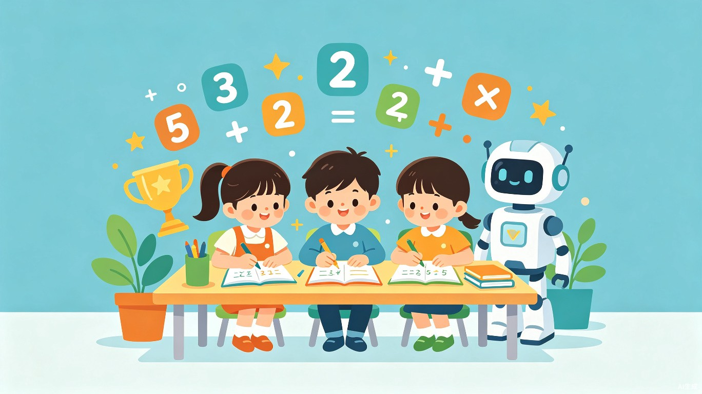
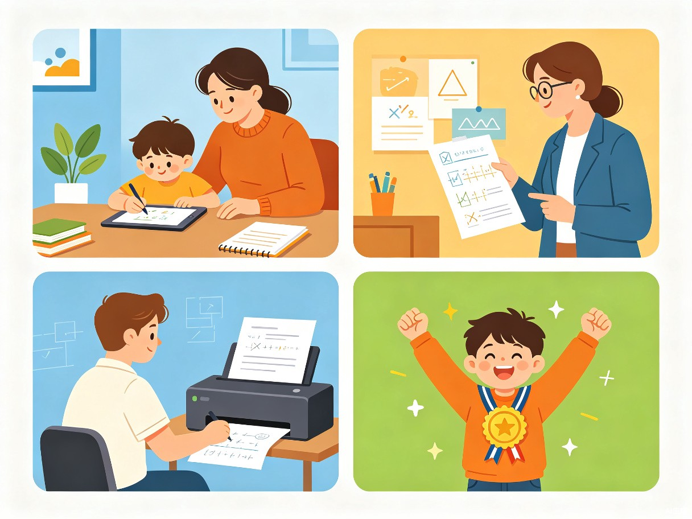

用游戏化、AI 辅助和智能出题，让小学生爱上口算练习

数学算数小达人
口算是小学数学最重要的基础能力之一，但很多孩子对枯燥的算术练习缺乏兴趣，家长也难以把握出题难度和练习节奏。我希望通过一款专为小学生设计的趣味口算练习工具，让原本枯燥的重复训练变成孩子愿意主动完成的“每日挑战”。
产生这个创意的原因，是看到身边不少家长每天要花大量时间给孩子出题、批改、找错题，而市面上的练习 App 要么广告过多、要么游戏化过重分散注意力、要么无法针对孩子的薄弱环节精准练习。因此希望设计一款专注、高效、有趣的口算练习小程序，真正服务于孩子的学习和家长的辅导。
产品形态为一款面向小学生及家长的微信小程序，核心能力包括自由练习、每日限时挑战、错题本与举一反三、关卡练习、成就徽章、口算出题打印以及 AI 学习助手。覆盖学龄前到小学六年级，支持加减乘除、混合运算、比大小、带余除法等多种题型。
核心用户群体是 6–12 岁的小学生，同时覆盖需要辅导孩子作业的 家长 和需要布置/打印口算作业的 教师。产品设计充分考虑不同年级孩子的认知水平和使用习惯，力求让孩子能够自主练习，也让家长和老师省心省力。
孩子可以在课前预习、课后巩固、寒暑假复习等场景中使用；家长可以在通勤、睡前等碎片时间让孩子练几道题；老师可以在课前 5 分钟组织限时挑战，或一键生成练习卷打印发放。典型场景包括：

传统口算练习缺乏反馈和激励，孩子容易厌倦，难以养成每日练习习惯。
家长手动出题时，难以根据孩子当前年级和能力匹配合适的难度和题型。
孩子错了就错，缺乏针对同一知识点的变式训练，同样的错误反复出现。
家长和老师需要手动出题、批改、整理错题，耗时耗力。
通过智能出题、即时反馈、错题针对训练，帮助孩子用更少的时间巩固口算能力；同时自动生成练习卷，为家长和老师节省大量出题和批改时间。
限时挑战、连击加分、成就徽章等游戏化设计，把练习变成闯关游戏，让孩子在成就感中建立对数学的积极态度。
小学口算是整个数学学习体系的“地基”，直接影响后续多位数运算、分数、小数乃至代数的学习效果。当前市场上虽然有不少教育类 App，但专门针对“口算”这一高频刚需场景、且兼顾趣味性与系统性的产品并不多见。
数学算数小达人以“让孩子主动练、让家长轻松管、让老师高效教”为目标，通过算法出题与游戏化激励的结合，在碎片化时间里完成高质量的口算训练，具有明确的用户价值和市场空间。
未来还可以扩展班级学情分析、AI 口语讲题、个性化学习路径推荐、家长端学习报告、趣味数学思维拓展等能力，逐步发展为面向小学阶段的智能数学练习平台。
按年级、题型、题量自由组卷，覆盖加减乘除、混合运算、比大小、带余除法等，系统自动批改并记录正确率。
60 秒限时答题、连击加分、每日排行榜，用竞赛感激发孩子的练习动力。
自动收录错题并标注知识点，智能生成 3 道相似题，帮助孩子彻底攻克薄弱点。
52 枚徽章覆盖连续打卡、答题数量、正确率、连击纪录等维度，持续激励孩子进步。
数学算数小达人希望通过科学、有趣、可持续的练习方式，帮助孩子夯实数学基础，也让家长和老师从繁重的出题批改中解放出来。